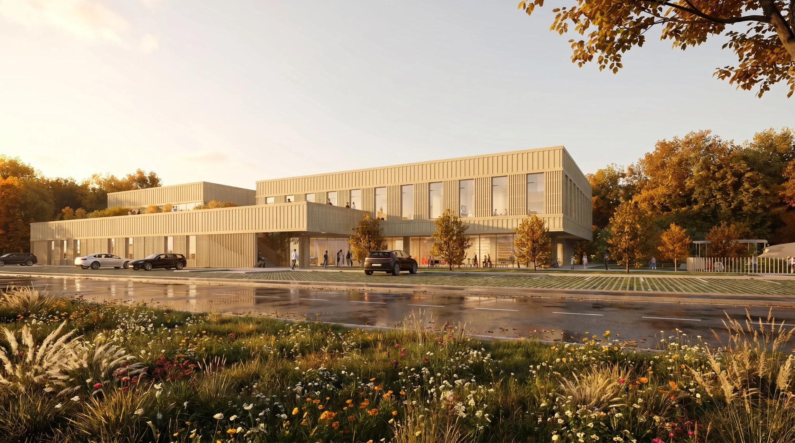
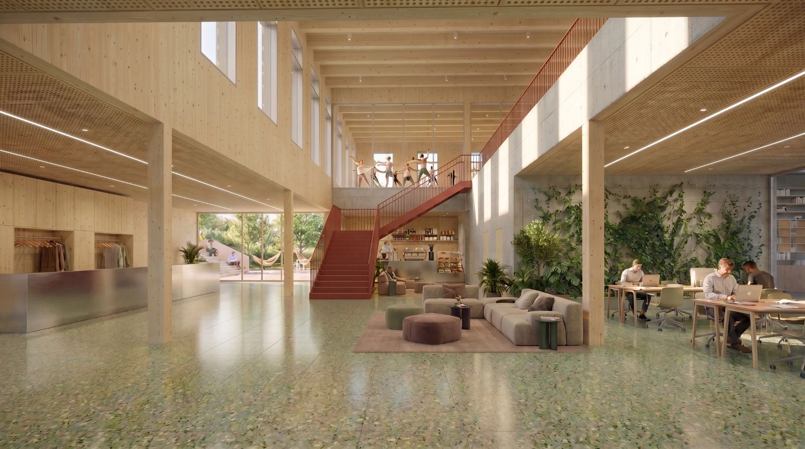
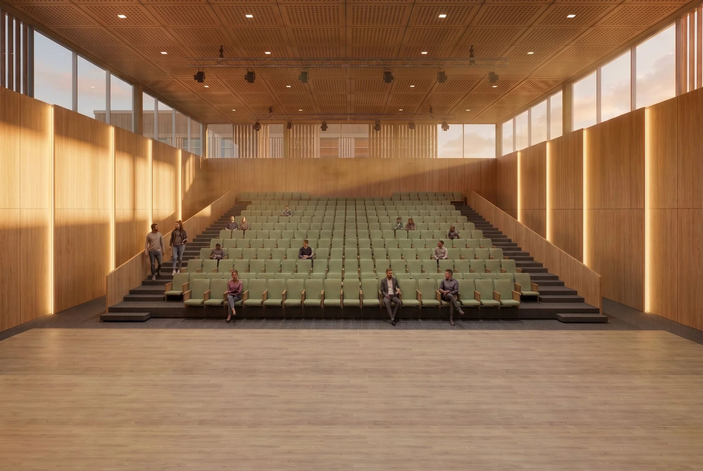
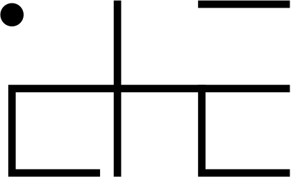
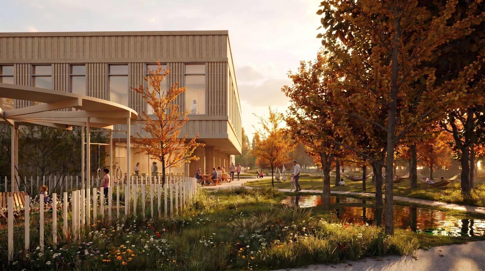

1 / 4
KOK01 / 06

ICHE Architects
ICHE Architects / Anna Swadźba
Projektujemy przestrzenie, które łączą prostotę, funkcję i uważność na otoczenie.
Zobacz projekty ↓Pracownia
ICHE Architects to pracownia Anny Swadźby. Tworzymy architekturę opartą na klarownych decyzjach, naturalnych materiałach i relacji budynku z krajobrazem.
Od pierwszej koncepcji po dokumentację projektową szukamy rozwiązań, które są proste w odbiorze i trwałe w użytkowaniu.
Wybrane projekty
Podejście
„Architektura nie musi być głośna, żeby zostać zapamiętana.”
Kontakt
ICHE Architects
Anna Swadźba
swadzba.architekt@gmail.com
798 752 469
ul. Sosnowa 28
43-180 Orzesze
ul. Piastów 5
40-866 Katowice